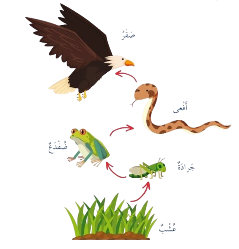
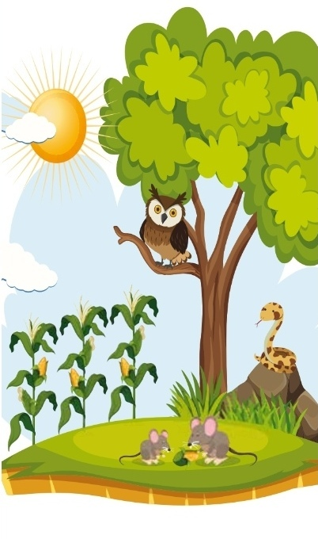

الدرس الثاني: السلسلة الغذائية
الفكرة الرئيسية
السلسلة الغذائية هي علاقة غذائية تربط الكائنات الحية، تبدأ عادة بالنباتات التي تصنع غذاءها، ثم آكلات العشب، وتنتهي بآكلات اللحوم، مما يوضح كيف تنتقل الطاقة بين الكائنات.

ما السلسلة الغذائية؟
السلسلة الغذائية هي العلاقات الغذائية بين الكائنات الحية.
مثال: الجرادة تأكل العشب، الضفدع يأكل الجرادة، الأفعى تأكل الضفدع، والصقر يأكل الأفعى.
تبدأ السلسلة غالبًا بالنباتات (تصنع غذاءها بنفسها)، ثم الحيوانات آكلات العشب، ثم آكلات اللحوم.
سلسلة غذائية
سؤال
حسب الصورة، ما الترتيب الصحيح للسلسلة الغذائية؟

السلسلة الغذائية
الإجابة: تبدأ السلسلة الغذائية بالشمس، ثم نبات الذرة، فالفأر، فالأفعى، وتنتهي بالبومة.
نشاط تعليمي
إنشاء سلسلة غذائية
ارسم سلسلة غذائية تتضمن خمسة كائنات حية (مثل: نبات، حشرة، ضفدع، أفعى، طائر). استخدم أسهمًا لتوضيح اتجاه انتقال الطاقة بين الكائنات، واشرح كيف يعتمد كل كائن على الآخر للحصول على غذائه.
الأدوات المطلوبة:
- ورق رسم
- ألوان
- صور كائنات حية مختلفة